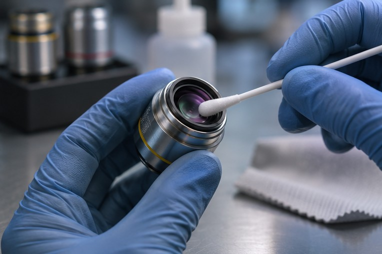
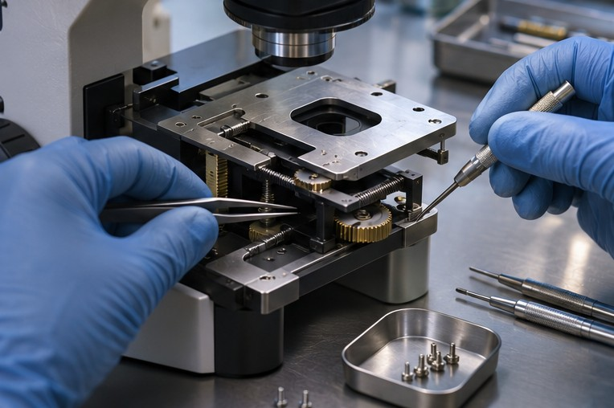
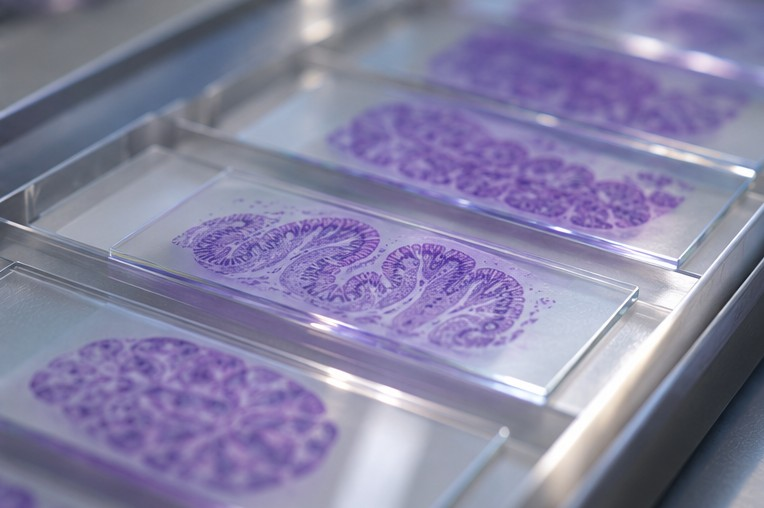
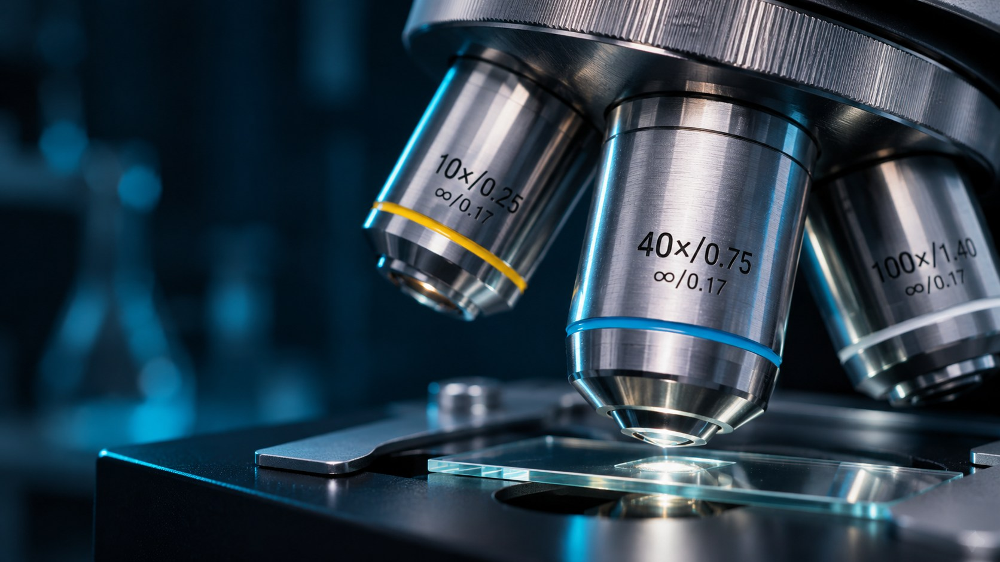

Service collection
How can we help?

Instrument cleaning
Remove accumulated dust and residue from microscope optics and working surfaces.
View service
Preventive maintenance
Plan maintenance around your workload and the instruments your team depends on.
View service
Microscope repair
Arrange a service evaluation for optical, focusing, stage, or illumination problems.
View service
Histology equipment repair
Discuss repair options for histology instruments across manufacturers.
View service
ZEISS warranty service
Ask the service team to review a ZEISS instrument issue and its warranty status.
View serviceUnsure which service to request?
The service coordinator can help identify the right next step.